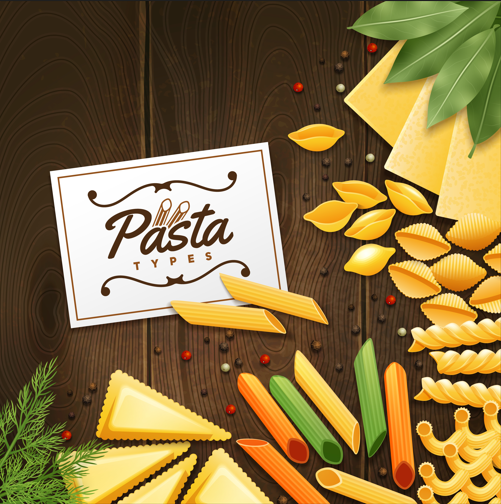

Ajoutez votre 'pâte' à vos recettes !
Imaginez-vous installé confortablement chez vous, prêt à vous plonger dans l'univers infini des pâtes.
Désormais, vous n'aurez plus à parcourir des allées de supermarchés interminables ou à consulter des catalogues sans
fin pour trouver les pâtes qui correspondent à vos attentes. Notre site vous offre une expérience fluide et agréable,
vous permettant de filtrer les résultats selon vos critères précis pour vous permettre de trouver les pâtes idéales
en fonction de vos préférences spécifiques, que ce soit leur marque, l'enseigne où vous pouvez les trouver ou en
éliminant les allergènes indésirables.
Seules les pâtes adaptées à vos besoins s'afficheront ! Rejoignez-nous dès maintenant et laissez-nous vous guider vers une expérience gustative exceptionnelle et sur mesure !
Seules les pâtes adaptées à vos besoins s'afficheront ! Rejoignez-nous dès maintenant et laissez-nous vous guider vers une expérience gustative exceptionnelle et sur mesure !
Utilisez notre fonction de recherche avancée pour explorer notre vaste sélection de pâtes disponibles en
France. Notre outil de tri vous permet de personnaliser votre recherche en fonction de divers critères tels que la
marque, le type de pâtes et les allergènes présents. Vous pouvez sélectionner vos marques préférées parmi une
liste exhaustive, filtrer les résultats en fonction des enseignes où elles sont vendues et affiner votre choix
en évitant les allergènes qui vous posent problème. Avec notre fonction rechercher, vous pouvez facilement
trouver les pâtes qui correspondent parfaitement à vos besoins et préférences culinaires. Explorez notre base
de données et découvrez les délicieuses options de pâtes qui s'offrent à vous !
